22 Enhanced Visualization
Once a dataset has been processed, plotting becomes the main way we inspect whether the workflow is behaving as expected. We need to check clusters, marker expression, sample composition, and structured summaries across groups, often with many small figure adjustments along the way.
sclet provides an enhanced visualization ecosystem tightly integrated with the ggsc package. It offers high-level plotting functions that operate directly on SingleCellExperiment objects while still returning standard ggplot2 objects, so you keep both convenience and full downstream customizability.
The chapter has two halves, and they are tested differently. The general-purpose plots (dimensional reduction, heatmaps, composition) run on the shared pbmc object during book rendering. The module-specific plots consume typed state records from analysis modules, so they are demonstrated on cached objects from earlier chapters or, where no suitable cache exists, shown as callable examples that state exactly which prerequisite is missing. Every non-executed chunk below says why in a comment on the chunk itself.
22.2 Dimensionality Reduction Plots
sclet wraps ggsc::sc_dim and ggsc::sc_feature to provide CellDimPlot and FeatureDimPlot. These functions automatically resolve the active reduction and layer from the object’s state.
22.2.1 CellDimPlot
CellDimPlot is used to visualize categorical cell metadata on a reduced dimensional space (e.g., UMAP, PCA).
library(ggplot2)
library(aplot)
# Visualize clustering results
p1 <- CellDimPlot(pbmc, group.by = "ident") + ggtitle("Clusters")
# Visualize batch or other metadata
# Assuming we have a 'label' column in colData
if ("label" %in% colnames(colData(pbmc))) {
p2 <- CellDimPlot(pbmc, group.by = "label") + ggtitle("Cell Types")
plot_list(p1, p2)
} else {
p1
}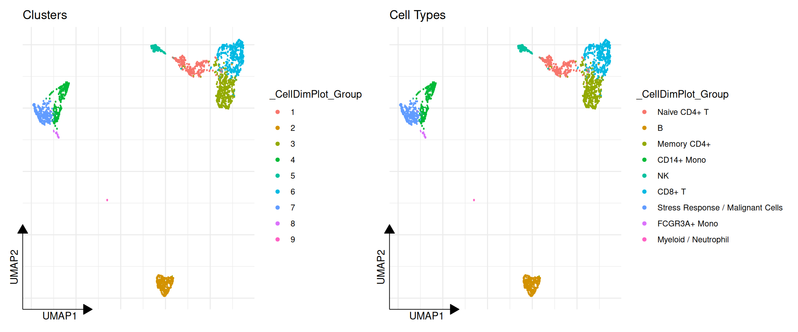
22.3 Expression Heatmaps
GroupHeatmap provides a convenient way to visualize the average expression of features across different cell groups using scater::plotGroupedHeatmap.
# Define a set of marker genes
markers <- c("IL7R", "CD14", "LYZ", "MS4A1", "CD8A", "FCGR3A", "MS4A7")
# Plot average expression by cluster
GroupHeatmap(pbmc, features = markers, group.by = "ident", scale = TRUE)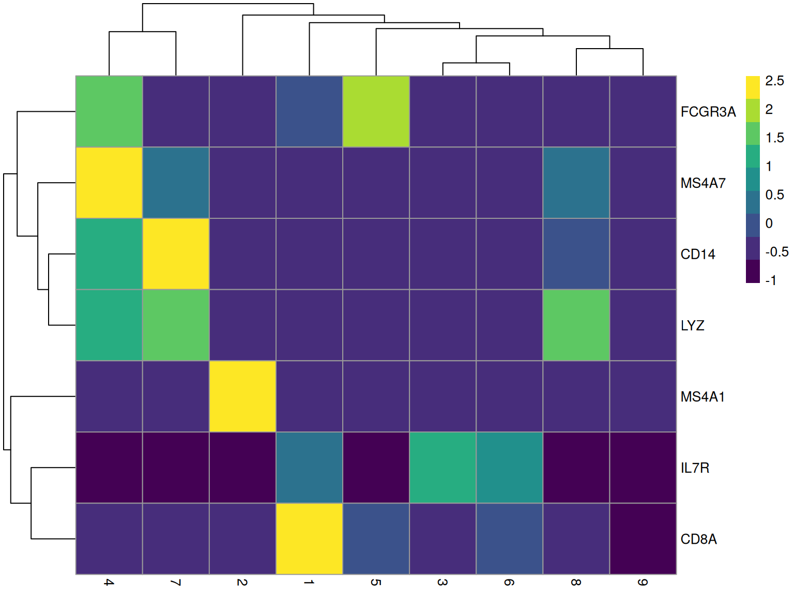
22.4 Cell Statistics
CellStatPlot is useful for visualizing the composition of cell groups (e.g., cell type proportions across different conditions).
# If we have multiple samples or batches, we can plot the proportion of each cluster
# Here we just use a simulated 'batch' column for demonstration if one doesn't exist
if (!"batch" %in% colnames(colData(pbmc))) {
set.seed(123)
pbmc$batch <- sample(c("Sample1", "Sample2"), ncol(pbmc), replace = TRUE)
}
# `CellStatPlot()` has no `stat.by` parameter: `group.by` is the x aesthetic and
# `split.by` is what fills/blocks it. Passing a non-existent argument used to be
# forwarded to `geom_bar()` through `...` and surfaced as the warning
# "Ignoring unknown parameters: `stat.by`" -- silent in a rendered book, but it
# meant the plot was drawing something other than the documented composition
# (measured 2026-10-21).
CellStatPlot(pbmc, group.by = "ident", split.by = "batch", position = "fill") +
ylab("Proportion") +
theme(axis.text.x = element_text(angle = 45, hjust = 1))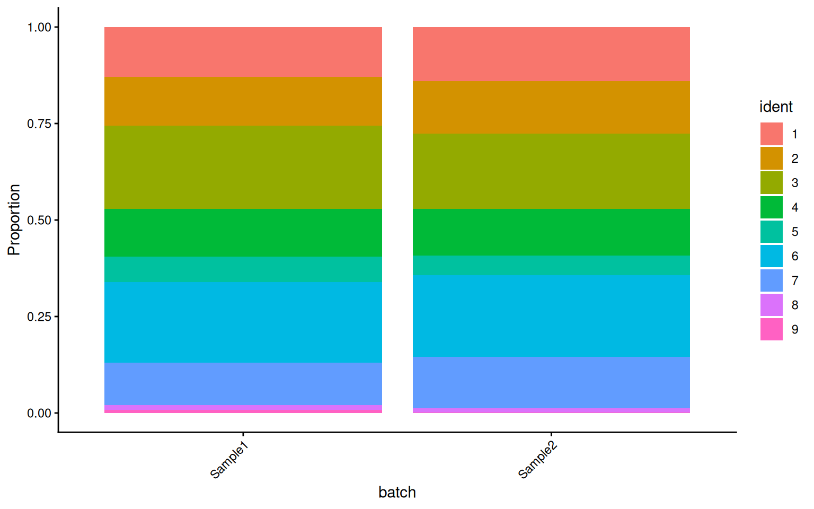
These visualization functions are designed to minimize boilerplate code while remaining fully compatible with ggplot2 grammar (+ theme(), + scale_color_manual(), etc.).
22.5 Module-Specific Visualization
Beyond the general-purpose plotting functions, sclet provides specialized visualization functions for each analysis module. These consume the typed state records directly, so you never need to manually extract matrices or metadata columns.
Each module plot needs two things: the function, and an object carrying the matching record. The functions are all implemented and all return ggplot objects; what varies is whether the book has an object to hand. The sections below are split accordingly, and each chunk’s comment names the prerequisite.
22.5.1 Trajectory and Fate
The trajectory and fate plots read the records written by RunTrajectoryWorkflow(), RunVelocity() and RunCellFate(). The book has cached objects for both halves, so the figures below are produced from real recorded results rather than described:
- the trajectory panels use the cached pancreas object through
RunTrajectoryWorkflow(), the same object the cell fate chapter uses; - the velocity and fate panels use
data/hermann-sperm-dynamics.rds, which already carries a recordedcellrankanalysis.
library(aplot)
# The workflow record must exist before any panel can be drawn.
panc_viz <- readRDS("data/pancreas_sub_sce.rds")
panc_viz <- RunTrajectoryWorkflow(
panc_viz,
group = "SubCellType",
reduction = "UMAP",
run_diffusion_map = TRUE,
run_slingshot = TRUE,
run_velocity = "never",
run_fate = "never",
name = "pancreas_viz"
)
# One call assembles the panels that have records behind them.
plot_trajectory_overview(
panc_viz,
id = "pancreas_viz",
panels = c("lineage")
)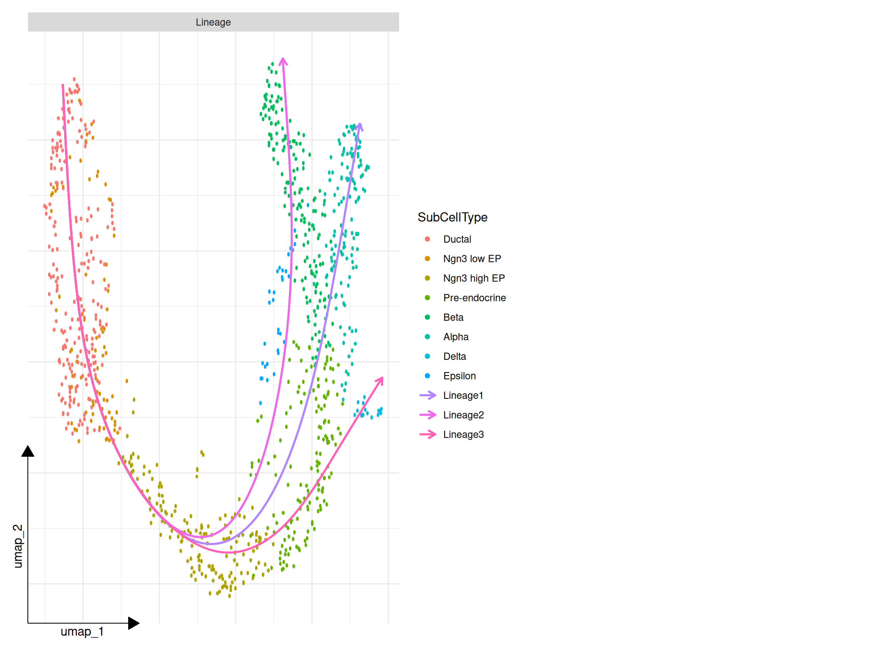
fate_demo <- readRDS("data/hermann-sperm-dynamics.rds")
# Fate probability on the embedding, for one lineage.
plot_fate_probability(fate_demo, fate = 1, reduction = "UMAP", id = "cellrank")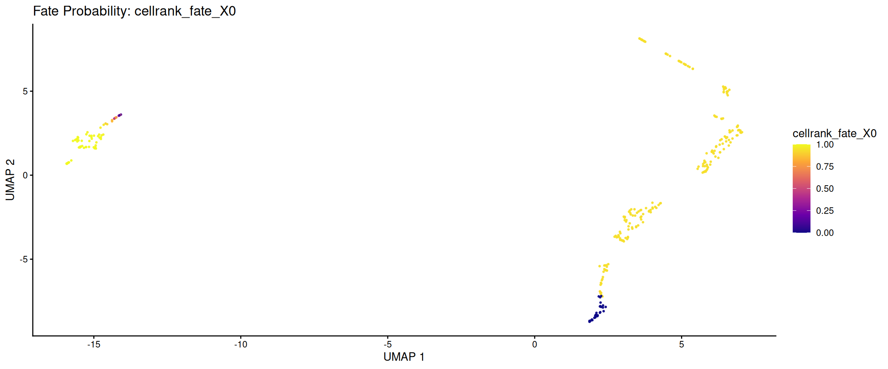
# Terminal state assignments.
plot_fate_terminal_states(fate_demo, reduction = "UMAP", id = "cellrank")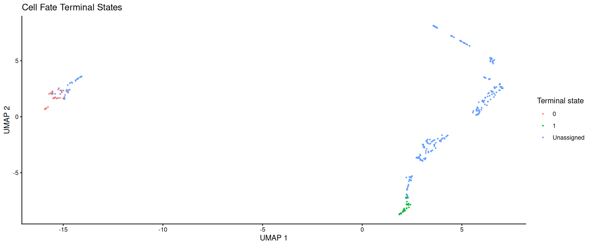
# Lineage driver trends: which genes trend along pseudotime / fate probability.
cellrank_record <- get_cellrank(fate_demo, id = "cellrank")
lineage <- cellrank_record$artifacts$fate_probability_names[[1]]
plot_fate_driver_trends(fate_demo, lineage = lineage, top_n = 4, id = "cellrank")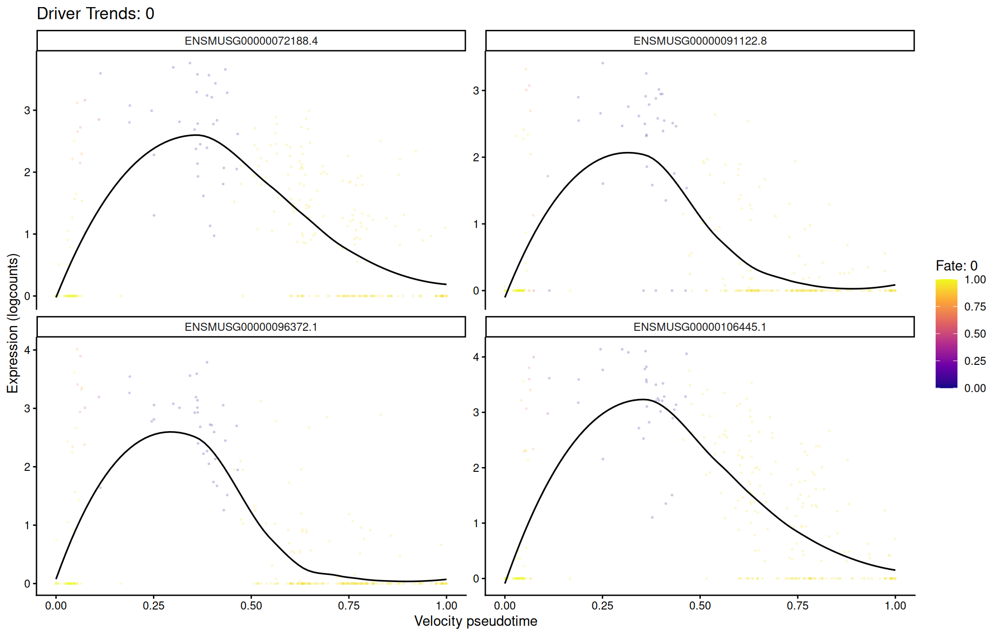
# Velocity latent time on the same embedding.
plot_velocity_latent_time(fate_demo, reduction = "UMAP")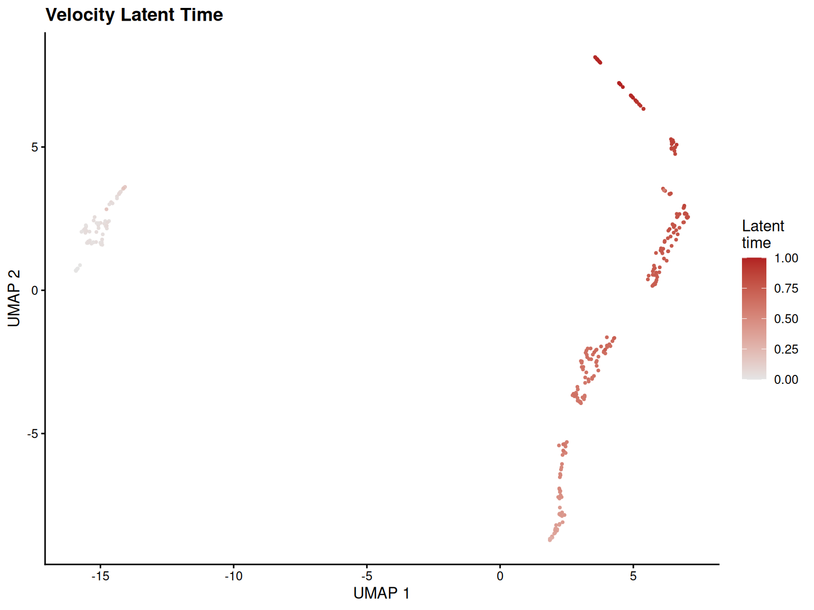
22.5.2 Program and Regulon Activity
Gene set scores and regulons share a unified visualization layer. The source parameter lets you switch between "geneset_scoring" and "scenic" without changing the plot call.
The plots need recorded program scores. None of the book’s cached objects carries a geneset_scoring record, so the chunk below scores the shared pbmc object first: RunGeneSetScoring() is pure R with a UCell backend, so this is a real run and the three figures are produced from real scores.
# Score a few small signatures so the program plots have a record to read.
program_signatures <- list(
T_cell = c("CD3D", "CD3E", "CD8A", "CD4"),
B_cell = c("CD79A", "MS4A1"),
Myeloid = c("LYZ", "CD14", "FCGR3A")
)
pbmc_program <- RunGeneSetScoring(pbmc, gene_sets = program_signatures,
method = "UCell", name = "ucell_viz")# Single program on the embedding.
plot_program_activity(pbmc_program, program = "T_cell",
source = "geneset_scoring", id = "ucell_viz")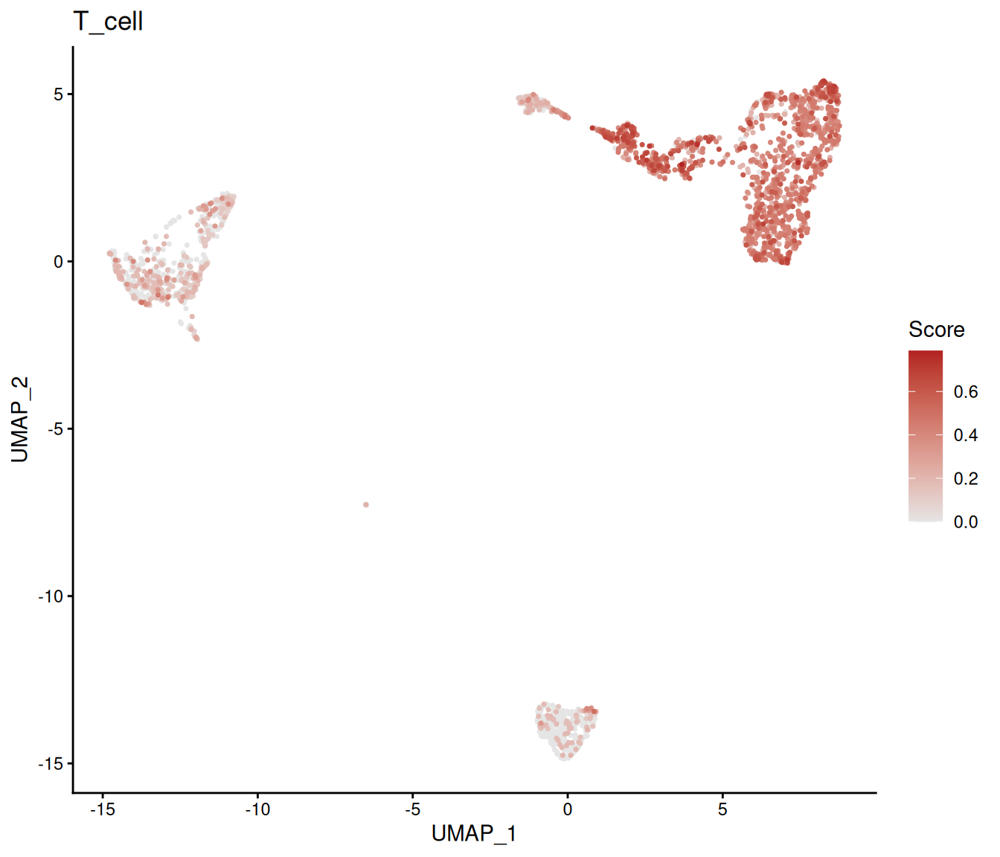
# Multi-program heatmap across groups.
plot_program_heatmap(pbmc_program,
programs = names(program_signatures),
source = "geneset_scoring", group.by = "colLabels", id = "ucell_viz")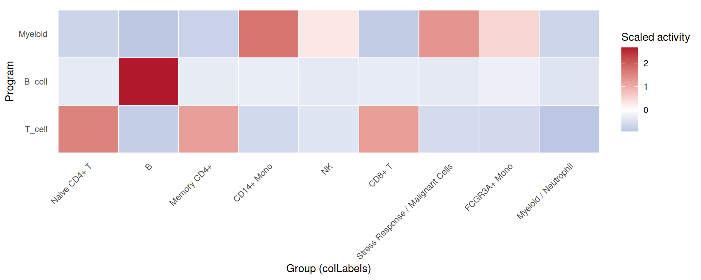
# Program dotplot: size = percent expressing, color = mean activity.
plot_program_dotplot(pbmc_program,
programs = names(program_signatures),
source = "geneset_scoring", group.by = "colLabels", id = "ucell_viz")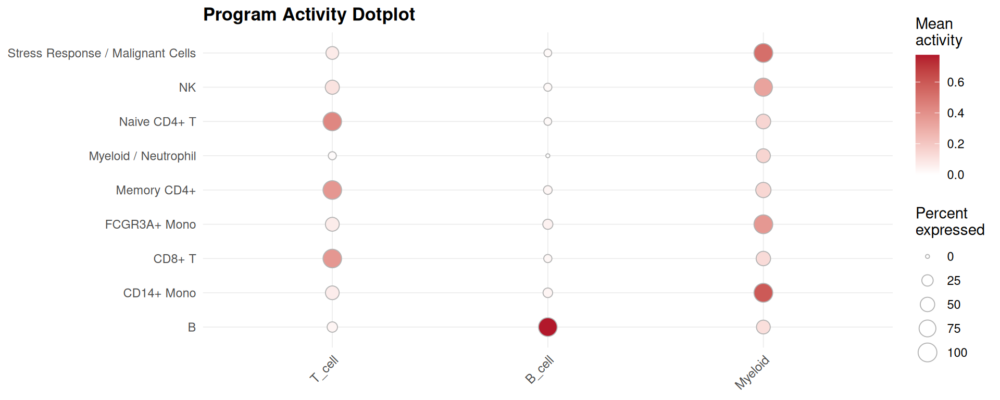
SCENIC regulon activity is a different source on the same functions. It is not executed here because the SCENIC record is not available in the book build — see the regulon section of the program chapter:
# Why not executed: plot_scenic_activity() reads a SCENIC altExp written by
# RunSCENIC(), which needs the pySCENIC basilisk environment plus a cisTarget
# ranking database. The book build has the small reference files but not that
# database, so no SCENIC record exists on any cached object.
plot_scenic_activity(pbmc_program, regulon = "STAT1(+)", source = "scenic")22.5.3 Perturbation Priority
# `plot_perturbation_ranking()` reads the Augur record written by
# `RunPerturbationPriority()`. On the shared `pbmc` object that record arrives
# from the [State Priority](#state-priority) chapter, which runs earlier in the
# book; the guard makes the dependency explicit instead of relying on chapter
# order, and skips the chunk rather than erroring when the record is absent
# (for example when Augur is not installed and that chapter's own chunks are
# conditional too).
plot_perturbation_ranking(pbmc, n = 15)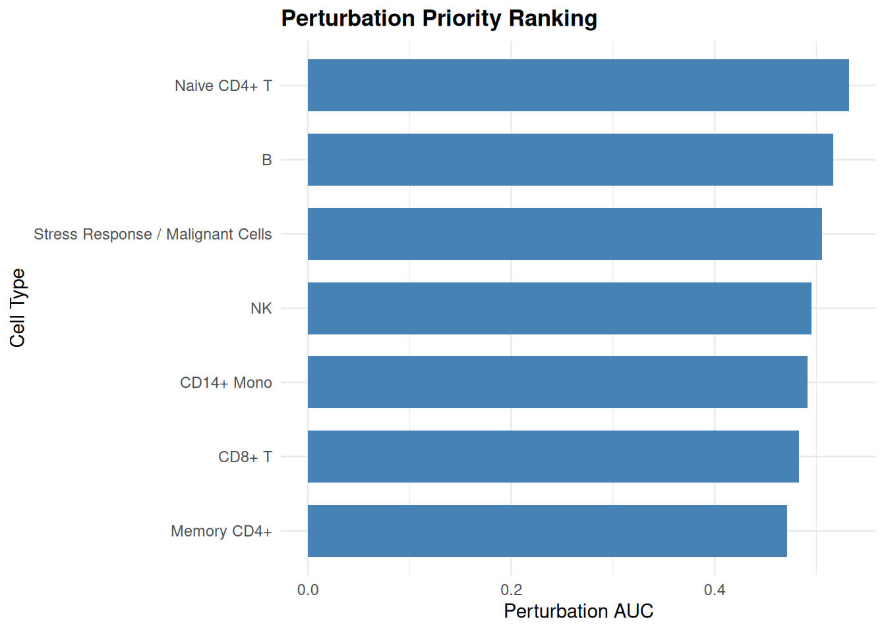
22.5.4 Spatial Analysis
The spatial deconvolution plots read the cell-type proportion columns recorded by RunSpatialDeconvolution(). The cached Visium DLPFC object in the book carries the tissue and the colocalization/niche records, but it was built to demonstrate SVP, not deconvolution, so it has no c2l_* columns. Cell2location itself needs a paired reference and a Python environment, which the book build does not provision.
The chunk below therefore attaches a deconvolution-shaped record to the cached object and draws both figures from it. Read carefully what that demonstrates: it exercises the plotting contract — record in, ranked bars and heatmap out — and it does not demonstrate deconvolution. The proportions are drawn at random, and the cell-type labels are labels, not estimates.
spe <- readRDS("data/visium-dlpfc-sub.rds")
# A deconvolution-shaped record, so the plotting contract can be exercised.
# The proportions below are random: this is a plotting demo, not an estimate.
set.seed(1)
spatial_demo_cells <- c("L2.IT", "L4.IT", "L5.IT", "L6.IT")
for (cell_type in spatial_demo_cells) {
spe[[paste0("c2l_", cell_type)]] <- runif(ncol(spe), 0, 0.5)
}
spe <- sclet:::sclet_set_analysis(spe, "spatial_deconv", list(
id = "viz_demo",
method = "cell2location",
artifacts = list(columns = paste0("c2l_", spatial_demo_cells)),
timestamp = Sys.time()
))
# Mean estimated proportion per cell type, ranked.
plot_spatial_deconvolution(spe, n = 10)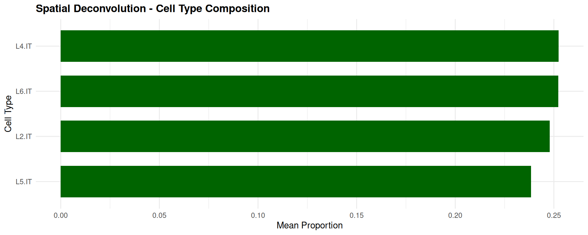
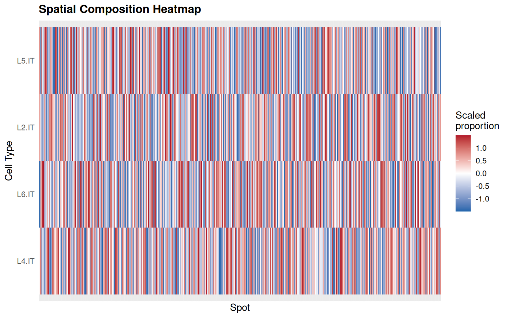
# Why not executed: cell2location needs a paired spatial object and scRNA-seq
# reference with a shared gene space, plus a basilisk Python environment. The
# comment above is not a substitute for this route, which produces real
# proportions.
sce_spatial <- RunSpatialDeconvolution(
sce_spatial, sce_ref,
ref_group_key = "cell_type",
name = "my_deconv"
)
plot_spatial_deconvolution(sce_spatial)22.5.5 Cell-Cell Communication
The communication plots read the standardized interaction table recorded by RunCCI(). The cached pancreas object plus a CellChat run is enough, so the three figures below are produced from real inferred interactions — the same run the communication chapter uses.
# Real interactions for the plotting layer to read.
cci_viz <- readRDS("data/pancreas_sub_sce.rds")
cci_viz <- RunCCI(cci_viz, method = "CellChat", group = "CellType",
layer = "logcounts", name = "cellchat_viz", species = "mouse",
keep_object = TRUE)## [1] "Create a CellChat object from a data matrix"
## Set cell identities for the new CellChat object
## The cell groups used for CellChat analysis are Ductal, Ngn3 low EP, Ngn3 high EP, Pre-endocrine, Endocrine
## The number of highly variable ligand-receptor pairs used for signaling inference is 342
## triMean is used for calculating the average gene expression per cell group.
## [1] ">>> Run CellChat on sc/snRNA-seq data <<< [2026-10-22 14:19:12.673329]"
## [1] ">>> CellChat inference is done. Parameter values are stored in `object@options$parameter` <<< [2026-10-22 14:19:24.34776]"## [1] 65# Bubble plot: one dot per interaction, size and colour by probability.
plot_cci_bubble(cci_viz, id = "cellchat_viz")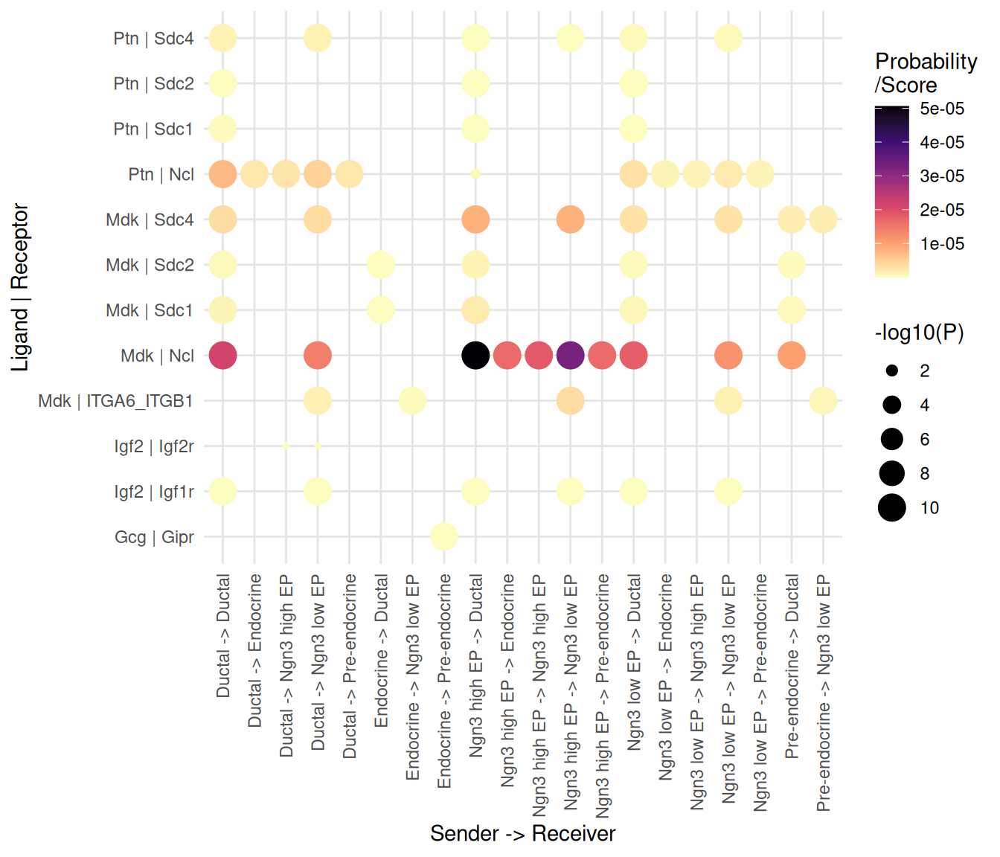
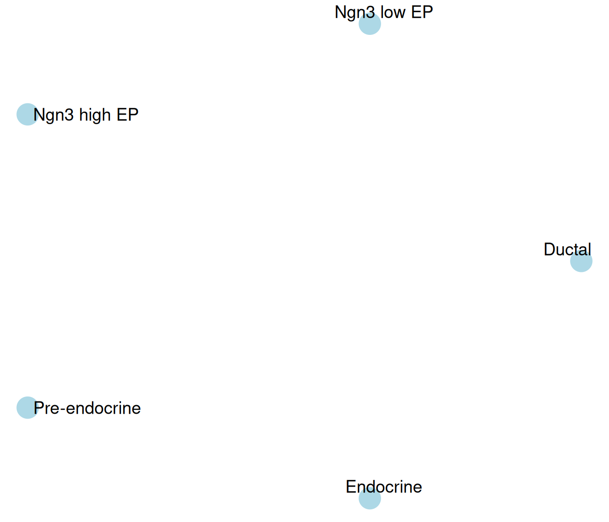
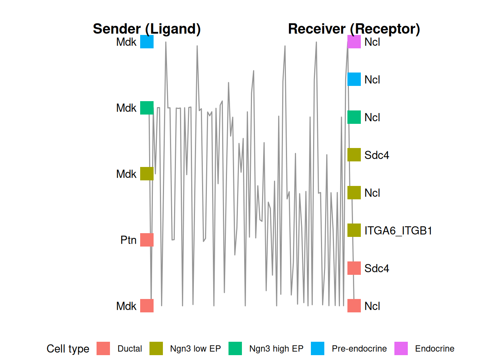